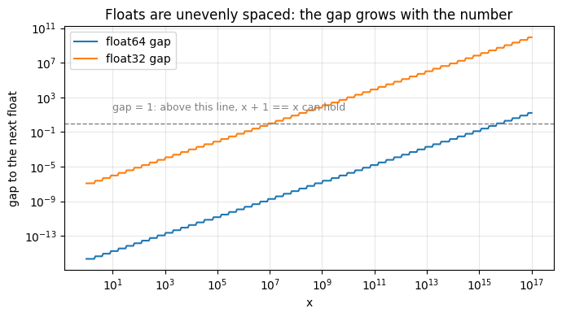

import math
import matplotlib.pyplot as plt
import numpy as np
rng = np.random.default_rng(1) # seed everything random
np.__version__'1.26.4'~40 minutes · after the Part A worksheet.
Everything you just predicted on paper, run live. The rules of this notebook:
We use only NumPy + Matplotlib (SciPy and PyTorch appear briefly, guarded — the notebook works without them).
import math
import matplotlib.pyplot as plt
import numpy as np
rng = np.random.default_rng(1) # seed everything random
np.__version__'1.26.4'False in programmingPredict: what does 0.1 + 0.2 == 0.3 return?
Worksheet Problem 1(b) told you why: \(0.1_{10} = 0.0\overline{0011}_2\) repeats forever, so float64 stores a rounded impostor for each of 0.1, 0.2, 0.3 — and then rounds the sum a third time. Print 20 decimal digits and the lie becomes visible:
for label, value in [("0.1 ", 0.1), ("0.2 ", 0.2), ("0.1 + 0.2", 0.1 + 0.2), ("0.3 ", 0.3)]:
print(f"{label} = {value:.20f}")0.1 = 0.10000000000000000555
0.2 = 0.20000000000000001110
0.1 + 0.2 = 0.30000000000000004441
0.3 = 0.29999999999999998890# Decimal shows the *exact* value of the stored float — no formatting tricks:
from decimal import Decimal
print("exact stored 0.1 :", Decimal(0.1))
print("exact stored 0.3 :", Decimal(0.3))
print("gap (0.1+0.2)-0.3:", (0.1 + 0.2) - 0.3)exact stored 0.1 : 0.1000000000000000055511151231257827021181583404541015625
exact stored 0.3 : 0.299999999999999988897769753748434595763683319091796875
gap (0.1+0.2)-0.3: 5.551115123125783e-170.1 + 0.2 and 0.3 land on two different points of the float64 grid, one grid-step apart (\(\approx 5.5 \times 10^{-17}\)). Neither is wrong by much — they are just not the same float.
Moral for all your future code: never test floats with ==; use a tolerance (np.isclose, math.isclose).
Worksheet Problem 3: near \(1\), floats are spaced by a fixed gap — the machine epsilon of the format. Let’s find it experimentally: keep halving eps until 1 + eps rounds back to exactly 1.
Predict: the loop below halves from 1.0. At what power of 2 does it stop for float64? (float64 has 52 mantissa bits.)
eps = 1.0
while 1.0 + eps / 2 > 1.0:
eps /= 2
print(f"experimental eps = {eps} = 2^{math.log2(eps):.0f}")
print(f"np.finfo(float64) = {np.finfo(np.float64).eps}")experimental eps = 2.220446049250313e-16 = 2^-52
np.finfo(float64) = 2.220446049250313e-16# Same experiment in float32 (23 mantissa bits):
eps32 = np.float32(1.0)
one32 = np.float32(1.0)
while one32 + eps32 / np.float32(2) > one32:
eps32 /= np.float32(2)
print(f"experimental eps32 = {eps32} = 2^{math.log2(eps32):.0f}")
print(f"np.finfo(float32) = {np.finfo(np.float32).eps}")experimental eps32 = 1.1920928955078125e-07 = 2^-23
np.finfo(float32) = 1.1920928955078125e-07\(2^{-52} \approx 2.2\times10^{-16}\) for float64, \(2^{-23}\approx 1.2\times10^{-7}\) for float32 — exactly the “one last-mantissa-bit” gap you derived on paper. Float32 carries only ~7 reliable decimal digits; float64 carries ~16. Keep those two numbers in your head forever.
Machine epsilon is the gap at 1. The gap grows with the number (worksheet Problem 3(c): gap \(= 2^{e-p}\) in \([2^e, 2^{e+1})\)). np.spacing(x) returns the gap from x to the next float.
Predict: the spacing at \(1\), at \(10^6\), and at \(10^{16}\) — roughly.
spacing at 1e+00 : 2.220e-16
spacing at 1e+06 : 1.164e-10
spacing at 1e+16 : 2.000e+00At \(10^{16}\) the gap is 2.0 — consecutive representable numbers differ by 2. So adding 1 literally cannot move you to a new float:
x = 1e16
print("x + 1 == x :", x + 1 == x) # the 1 is absorbed
print("(x + 1) - x :", (x + 1) - x) # worksheet 5(a)
print("(x - x) + 1 :", (x - x) + 1) # worksheet 5(b): same numbers, other orderx + 1 == x : True
(x + 1) - x : 0.0
(x - x) + 1 : 1.0Same three numbers, different order, different answer: floating-point addition is not associative. This is why summing a million small gradient updates into a large accumulator is dangerous — and one reason optimizers keep some state in float32 even when training in half precision.
One picture of the whole number line:
xs = np.logspace(0, 17, 400)
fig, ax = plt.subplots(figsize=(7, 4))
ax.loglog(xs, np.spacing(xs), label="float64 gap")
ax.loglog(xs, np.spacing(xs.astype(np.float32)).astype(np.float64), label="float32 gap")
ax.axhline(1.0, color="gray", ls="--", lw=1)
ax.annotate("gap = 1: above this line, x + 1 == x can hold",
xy=(1e1, 1.0), xytext=(1e1, 3e1), fontsize=9, color="gray")
ax.set_xlabel("x")
ax.set_ylabel("gap to the next float")
ax.set_title("Floats are unevenly spaced: the gap grows with the number")
ax.legend()
ax.grid(True, which="major", alpha=0.3)
plt.tight_layout()
plt.show()
Both lines are straight on a log-log plot: the gap is a fixed fraction of \(x\) (\(\approx \varepsilon \cdot x\)). Float32 crosses gap \(=1\) near \(2^{23} \approx 8.4\times 10^6\) — above that, float32 cannot even count integers one by one.
Subtracting two nearly-equal numbers wipes out their shared leading digits and promotes rounding noise to the front. Two classic victims:
Both formulas below are algebraically identical:
\[\operatorname{Var}(X) = \underbrace{\mathbb{E}[X^2] - \mathbb{E}[X]^2}_{\text{naive: one pass}} = \underbrace{\mathbb{E}\left[(X - \mathbb{E}[X])^2\right]}_{\text{two-pass: subtract the mean first}}\]
Data: 10,000 points with mean \(10^9\) and true variance \(\approx 1\).
Predict: \(\mathbb{E}[X^2] \approx 10^{18}\) and \(\mathbb{E}[X]^2 \approx 10^{18}\), and we subtract them hoping to recover a difference of order… 1. What is np.spacing(1e18)?
data = 1e9 + rng.standard_normal(10_000) # mean 1e9, true variance ~1
naive_var = np.mean(data**2) - np.mean(data) ** 2 # E[X^2] - E[X]^2
twopass_var = np.mean((data - np.mean(data)) ** 2) # E[(X - E[X])^2]
print(f"naive E[X^2] - E[X]^2 : {naive_var}")
print(f"two-pass : {twopass_var:.6f}")
print(f"np.var(data) (NumPy) : {np.var(data):.6f}")
print(f"spacing at 1e18 : {np.spacing(1e18)}")naive E[X^2] - E[X]^2 : -128.0
two-pass : 0.996994
np.var(data) (NumPy) : 0.996994
spacing at 1e18 : 128.0The naive formula returns a negative variance — mathematically impossible, numerically routine. Both terms are \(\approx 10^{18}\), where the float64 grid steps by np.spacing(1e18) \(= 128\); the true difference (\(\approx 1\)) is smaller than one grid step, so the subtraction returns pure rounding noise. The two-pass formula subtracts the mean first, while the numbers are small, and is perfectly fine.
(If a variance, a norm, or a probability ever comes out negative in your ML code — this is usually why.)
Solve \(x^2 - 10^8 x + 1 = 0\). The roots are \(\approx 10^8\) and \(\approx 10^{-8}\) (their product must be \(c/a = 1\)).
Predict: which root does \(\frac{-b - \sqrt{b^2 - 4ac}}{2a}\) get wrong, and why?
a, b, c = 1.0, -1e8, 1.0
disc = math.sqrt(b * b - 4 * a * c)
big_root = (-b + disc) / (2 * a) # fine: adds two big positives
small_naive = (-b - disc) / (2 * a) # -b and disc agree to ~16 digits -> cancellation
small_stable = c / (a * big_root) # stable: product of roots = c/a
print(f"big root : {big_root}")
print(f"small root, naive : {small_naive}")
print(f"small root, stable : {small_stable}")
print(f"true small root : ~1.0000000000000002e-08")
f = lambda x: x * x + b * x + c # plug back in: residual check
print(f"\nf(naive) = {f(small_naive):.4f} <- not a root at all")
print(f"f(stable) = {f(small_stable):.2e}")big root : 100000000.0
small root, naive : 7.450580596923828e-09
small root, stable : 1e-08
true small root : ~1.0000000000000002e-08
f(naive) = 0.2549 <- not a root at all
f(stable) = 1.11e-16-b and sqrt(b²-4ac) agree to about 16 digits, so their difference keeps almost nothing: the naive small root is off by 25%, and plugging it back into the polynomial gives a residual of \(0.25\) instead of \(\approx 0\). The fix is the same trick as worksheet 5(c): rewrite to avoid the subtraction (here via the root product \(x_1 x_2 = c/a\)).
Formats have a ceiling: float32 tops out at \(\approx 3.4\times10^{38}\), float64 at \(\approx 1.8\times10^{308}\). For \(e^x\) that means overflow at \(x \approx 88.7\) (float32) and \(x \approx 709.8\) (float64).
Predict: np.exp(89) in float32 vs float64.
with np.errstate(over="ignore"):
print("exp(89) float32 :", np.exp(np.float32(89)))
print("exp(89) float64 :", np.exp(np.float64(89)))
print("exp(710) float64 :", np.exp(np.float64(710))) # float64's ceiling is ~709.8exp(89) float32 : inf
exp(89) float64 : 4.4896128191743455e+38
exp(710) float64 : infNow the ML consequence. Softmax turns scores (logits) into probabilities: \(\operatorname{softmax}(x)_i = e^{x_i} / \sum_j e^{x_j}\). A language model’s logits can easily be in the hundreds. Watch the naive implementation die:
def softmax_naive(x):
e = np.exp(x)
return e / e.sum()
def softmax_stable(x):
e = np.exp(x - np.max(x)) # the max trick: shift so the largest exponent is 0
return e / e.sum()
logits = np.array([1000.0, 1001.0, 1002.0])
with np.errstate(over="ignore", invalid="ignore"):
print("naive :", softmax_naive(logits))
print("stable :", softmax_stable(logits))
print("sums to:", softmax_stable(logits).sum())naive : [nan nan nan]
stable : [0.09003057 0.24472847 0.66524096]
sums to: 0.9999999999999999inf / inf = nan — the naive version returns nan for every class, and one nan in a loss poisons the entire backward pass. The stable version subtracts the max first (worksheet Problem 6): softmax is shift-invariant, so the answer is identical, but the largest shifted exponent is \(e^0 = 1\) — overflow is impossible.
The same trick computes \(\log \sum_i e^{x_i}\) — the log-sum-exp at the heart of cross-entropy loss. Libraries ship it ready-made:
def logsumexp_by_hand(x):
m = np.max(x)
return m + np.log(np.sum(np.exp(x - m)))
print("by hand :", logsumexp_by_hand(np.array([1000.0, 1000.0, 1000.0])))
print("worksheet answer : 1000 + ln(3) =", 1000 + math.log(3))
try:
from scipy.special import logsumexp
print("scipy.special :", logsumexp([1000.0, 1000.0, 1000.0]))
except ImportError:
print("scipy not installed — skipping (the by-hand version above is the same thing)")by hand : 1001.0986122886682
worksheet answer : 1000 + ln(3) = 1001.0986122886682
scipy.special : 1001.0986122886682Deep learning rarely trains in float64 — memory and speed push it to 16 bits. There are two ways to spend 16 bits, and they make opposite trade-offs:
| format | sign | exponent | mantissa | max value | decimal digits |
|---|---|---|---|---|---|
| float16 | 1 | 5 | 10 | 65,504 | ~3 |
| bfloat16 | 1 | 8 | 7 | \(\approx 3.4\times10^{38}\) | ~2 |
bfloat16 keeps float32’s exponent (same range, so gradients don’t overflow/underflow) and pays with precision. float16 does the reverse.
Predict: what happens to \(10^5\) in each format?
# bfloat16 backend: prefer ml_dtypes, fall back to torch, else skip gracefully.
bf16_cast = None
try:
import ml_dtypes
bf16_cast = lambda v: float(np.asarray(v, dtype=ml_dtypes.bfloat16))
print("bfloat16 backend: ml_dtypes")
except ImportError:
try:
import torch
bf16_cast = lambda v: torch.tensor(v, dtype=torch.bfloat16).item()
print("bfloat16 backend: torch")
except ImportError:
print("Neither ml_dtypes nor torch available — bfloat16 column will be skipped.")bfloat16 backend: torchvalues = [1e5, 3.14159265, 1.001]
header = f"{'value':>12} | {'float16':>12}"
if bf16_cast is not None:
header += f" | {'bfloat16':>12}"
print(header)
print("-" * len(header))
for v in values:
row = f"{v:>12} | {float(np.float16(v)):>12}"
if bf16_cast is not None:
row += f" | {bf16_cast(v):>12}"
print(row) value | float16 | bfloat16
------------------------------------------
100000.0 | inf | 99840.0
3.14159265 | 3.140625 | 3.140625
1.001 | 1.0009765625 | 1.0/var/folders/1x/wmgn24mn1bbd2vgbqlk98tbc0000gn/T/ipykernel_33336/670532066.py:9: RuntimeWarning: overflow encountered in cast
row = f"{v:>12} | {float(np.float16(v)):>12}"Reading the table:
inf (its max is 65,504) but is finite in bfloat16 — merely rounded to a nearby representable value. Range vs precision, exactly as designed.If neither ml_dtypes nor torch was available above, the bfloat16 column is skipped — the table row for float16 still shows the overflow, and the trade-off table in the markdown tells the bfloat16 half of the story.
Three things to take out of this tutorial:
1e16 + 1), catastrophic cancellation (naive variance, quadratic formula), overflow/underflow of intermediates (naive softmax).What this means for AI:
NaN (Lecture 2’s opening demo), you now have the suspect list: an exp that overflowed, a cancellation that went negative inside a sqrt/log, a division by an absorbed-to-zero denominator.Computers don’t do real numbers — they do ~4 billion of them, unevenly spaced.